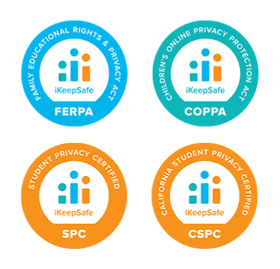

Mobile Exam does not collect any data or information from you before, during or after your exam attempt.
Mobile Exam maintains the same privacy by design approach as the desktop extension. This means that we design our Learning Integrity Platform to better protect your privacy and security.
Test-takers can rest easy that Mobile Exam only runs during the exam and that their notifications and preferred mobile settings will return to their original state as soon as the exam is ended or submitted.
No additional Personally Identifiable Information (PII), other than what is already required by the institution, is ever required to enter an exam through this mobile platform.
Mobile Exam can be removed from the test-taker’s mobile device as soon as an exam is submitted and reinstalled easily for the next exam.
Please see Proctorio’s Privacy Policy for more information about our privacy practices.
Proctorio has been recognized for creating a product that protects test takers’ privacy all over the world. Proctorio adheres to the highest global privacy and data security standards.
Proctorio’s products have been assessed by American iKeepSafe’s professional privacy assessors and have been certified to meet their rigorous standards. Proctorio has the following certifications:
Proctorio has proudly signed the Student Privacy Pledge. This means that we pledge to carry out responsible stewardship and appropriate use of student personal information according to the commitments in the Pledge and in adherence to all laws applicable to us as school service providers.
Proctorio, also, makes EU users aware of their privacy and data security rights and is fully GDPR compliant.